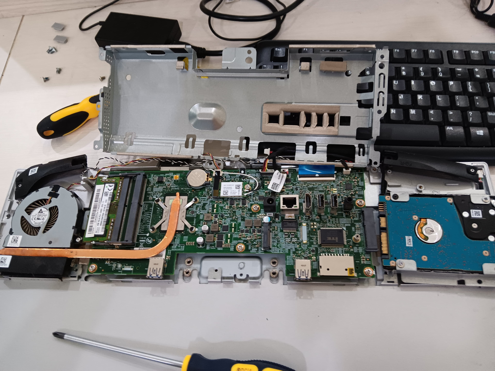
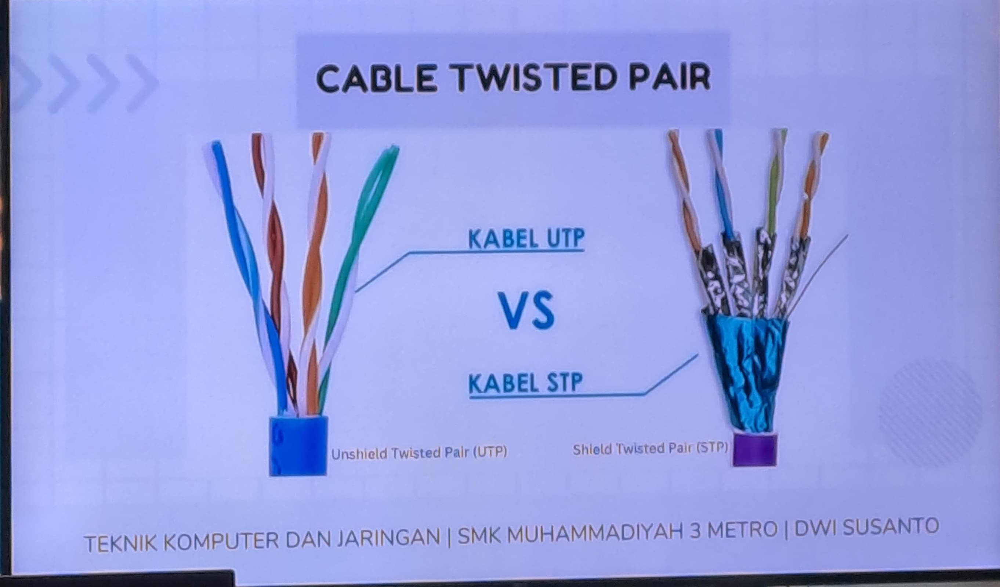
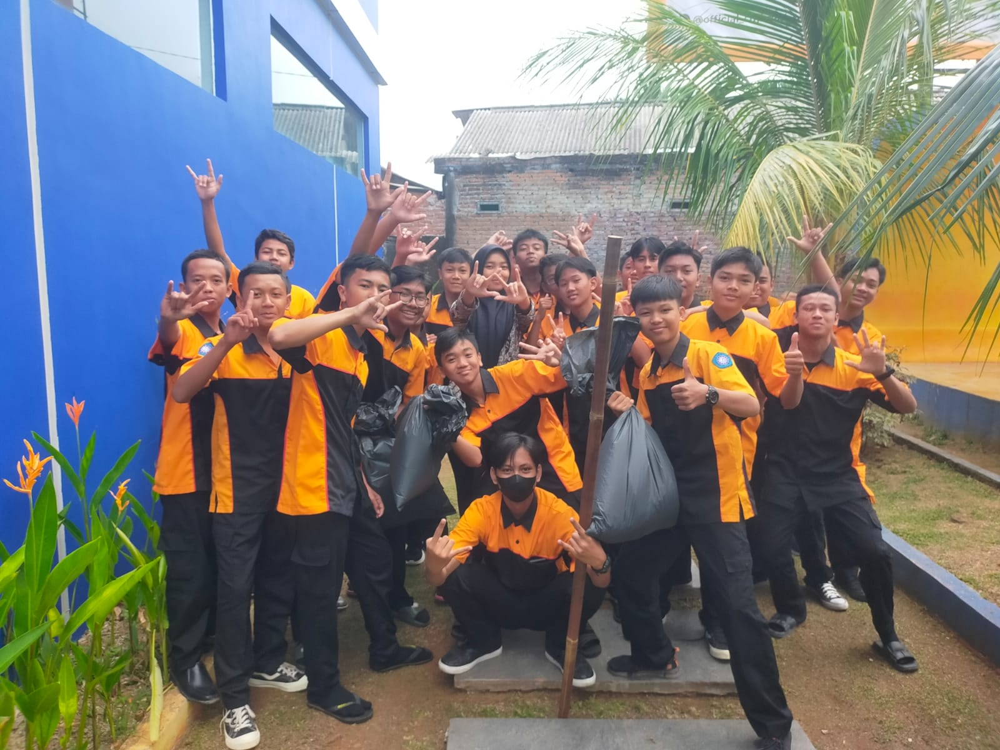
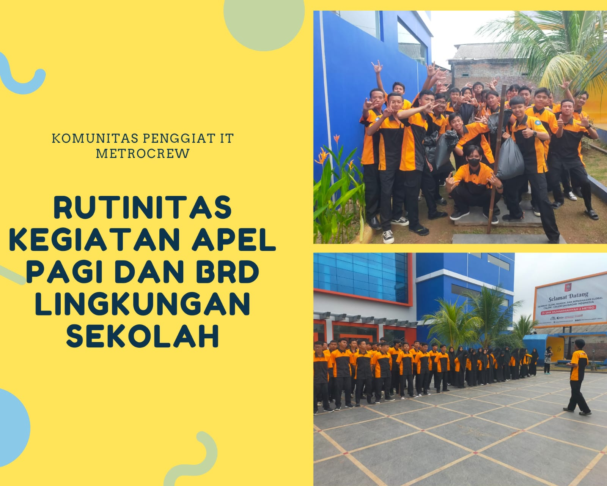
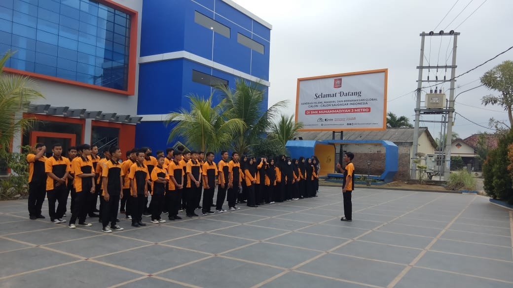
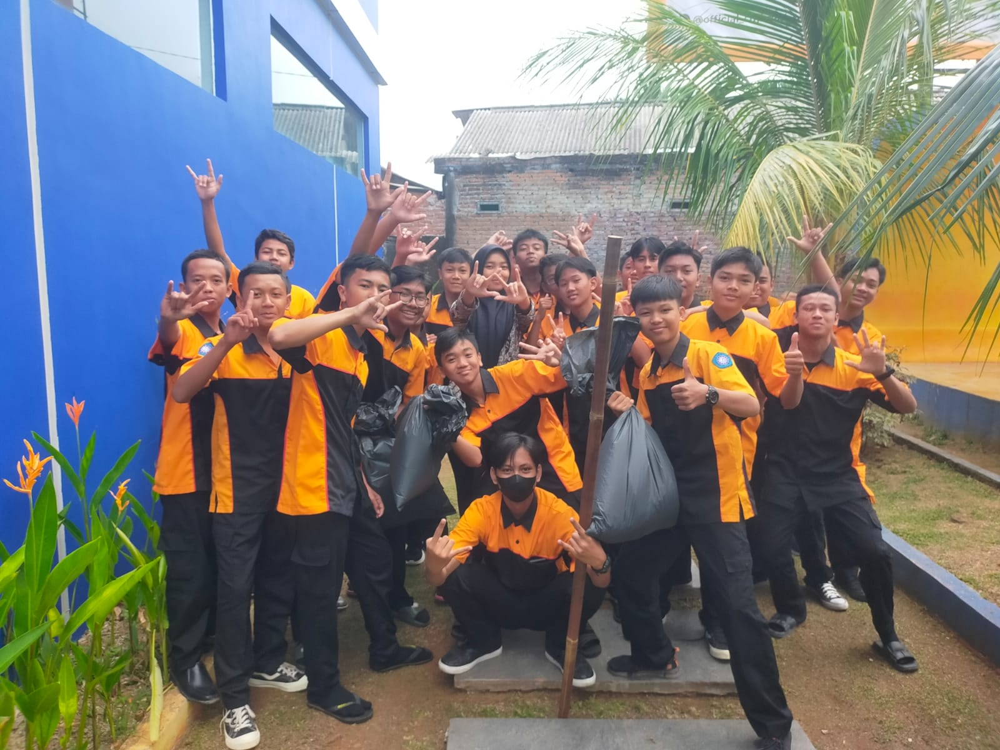
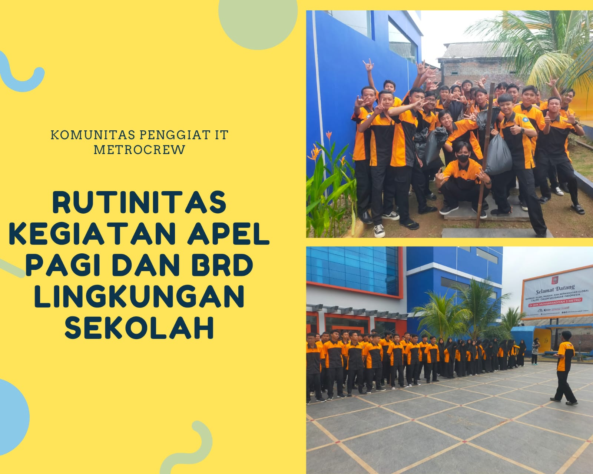
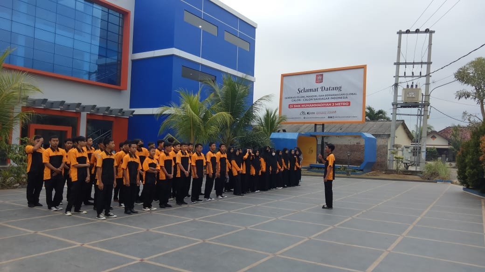

Salah satu keunggulan TKJ adalah penggunaan Metode Praktik Langsung sehingga mampu menyediakan sumber belajar yang tidak terbatas, penilaian transparan serta mendidik siswa untuk berfikir ilmiah dengan memperhatikan potensi masing-masing individu.
Lulusan TKJ dapat bekerja diberbagai hal yang bersangkutan dengan teknologi dan IT


 




